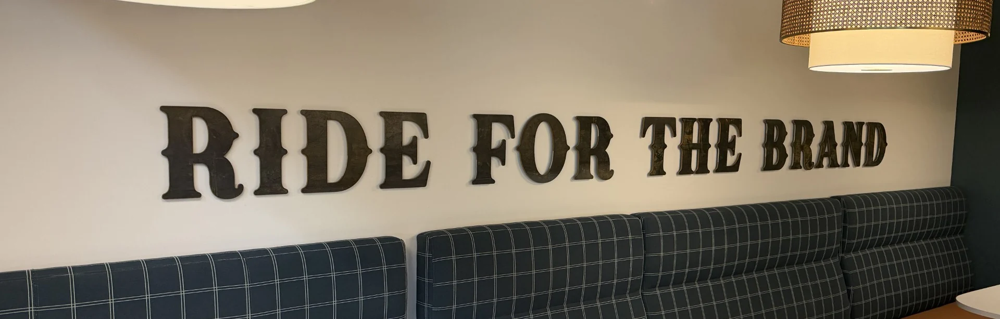

A Culture Built to Last
At Peoples Company, culture isn't a talking point, it's our operating system. It's the reason talented professionals choose to represent our brand while they build their careers, and it's the reason they stay. Over more than two decades of growth, from a single-office Iowa firm to a national platform spanning 25 offices and more than 175 people, the culture has deepened as our team members challenge themselves and others to serve clients better, expand their own capabilities, and collaborate more closely across our platform.
What we've built has emerged from the daily commitment of professionals who cared about the land, about their clients, about the person in the office next to them. It has been tested by hard markets, difficult decisions, and the demands of building something powerful together in an industry that has not evolved as the farmland asset class has matured.
This is the Peoples Company culture. Not a summary of it, but an honest account of what it looks like from the inside, and what it asks of the people who carry it forward.

Living Our Culture
The culture we've built at Peoples Company isn't just something we talk about in mission statements or company memos, it's something we live every day through our traditions, our celebrations, and the ways we connect as a team. These shared experiences reinforce our values and remind us what it means to ride for the brand.


Forging a Legacy
In 2003 our President, Steve Bruere, set out to begin building Peoples Company into a national land services business, he recognized something crucial: the principles that made great farmland professionals exceptional were not geographic. Hustle, commitment to client success, genuine relationships, the willingness to put the team's success above your own. These principles didn't stop at the county line. They could travel. It required the right people, in the right location, bound together by the right values.
This became the blueprint for every hire and every acquisition: find the local expert who is, at their core, a team player. Someone with deep roots in their market and the relentless work ethic to serve it, but who understood that joining Peoples Company meant committing to something larger than their individual book of business. The firms and professionals who joined were not simply added to a roster. They were asked to become part of a shared mission, and to bring their own clients and communities along with them.
Slowly, methodically, the culture proved itself. Talented professionals across the country saw what Peoples Company was building: a platform where individual excellence and team success were not competing values, but deeply intertwined outcomes that feed off one another. Over time, we found that the outstanding individuals across the country wanted to be part of it, not because of our marketing or technology tools, but because of the people already there and the standard they had set. Excellence began to attract excellence. That dynamic, once established, has never stopped.
Today, that legacy is still being written. The chapters on our previous growth, acquisitions, and industry recognition are the foundation. What comes next depends on the professionals who carry the brand forward and the choices they make every day about what kind of firm Peoples Company will be. That responsibility has always been shared across the entire team.

The Peoples Company Philosophy
Ride for the Brand
At Peoples Company, our team's commitment to success goes beyond collaboration and collegiality. The experience of working for Peoples Company is just as much about who you work with as it is about the work itself. We believe that a person's commitment to their team and organization is what defines them. When you join Peoples Company, you don't just take a job with our firm. We expect our team members to advance and protect what the team stands for because they genuinely want to work alongside people who share these same values. This philosophy, inspired by the legacy of the landowners that we represent, means that everyone who represents the Peoples Company brand is committed to our core values and collective success.
Our greatest competitive advantage isn't our superior technology or a broader offering of services, it's our people and the ethos we've built together. Our greatest challenge, but our deepest commitment, is to continue building relationships nationwide with an organization made up of land professionals that exemplify the “Ride for the Brand” culture and who want to work alongside others who challenge them to improve every day. While technology, marketing, and sales strategies can be mimicked, matching a nationwide culture of excellence across a comprehensive services platform cannot. That's what sets us apart.
At Peoples Company, high standards are foundational. Being part of our team and our brand requires sustained, organization-wide effort towards excellence, and we're unapologetic about maintaining that commitment across every aspect of our business. Those who thrive at Peoples Company take the platform and tools we provide and execute at the highest level. This requires unwavering dedication and genuine collaboration. Our team members take the initiative in their personal development, are proactive in seeking opportunities, and are willing to support other teammates in their pursuit of the same goals. Over time, this culture of “Ride for the Brand” has become self-reinforcing. As we uphold these standards through leadership and example, excellence and commitment to the team and its brand becomes the expectation, and that excellence becomes its own reward.

The Cowboy Hat

The Peoples Company Cowboy Hat is our ultimate symbol of excellence. Our cowboy hat represents dedication, tenure, contribution, and the highest standards of professional achievement. Those who wear it truly exemplify what Peoples Company stands for.
Our goal is for our cowboy hat to be an emblem that represents Peoples Company's culture externally. We want it to serve as a visible reminder of what it means to ride for the brand. When you see someone wearing their hat, you know they have earned the respect of their peers, demonstrated sustained excellence, and committed themselves to something larger than their individual success.
That's what riding for the brand looks like.
Awards & Recognitions
Every award we give at Peoples Company and every milestone we celebrate reinforces the culture we've built together. These recognitions matter because they tell the story of who we are: a team that values both individual excellence and collective success, and that celebrates the many ways our people contribute to something larger than themselves.
-
 Annual award
Annual awardTop Producers
-
 Annual award
Annual awardThe Abundance Award
-
 Annual award
Annual awardThe Branded Award
-
 Annual award
Annual awardDesign of the Year
-
10 years of service
The Belt Buckle
-
20 years of service
The Cowboy Boots

The Annual Company Trip
The annual company trip embodies what makes Peoples Company special: it's where we build genuine relationships with people who happen to love the same work, deepen the trust that makes our collaboration possible, and remember why we chose to be part of something larger than ourselves. Through connecting together each year in a unique location where we learn and celebrate, new team members truly become part of the team and longtime colleagues strengthen the bonds that carry us forward.